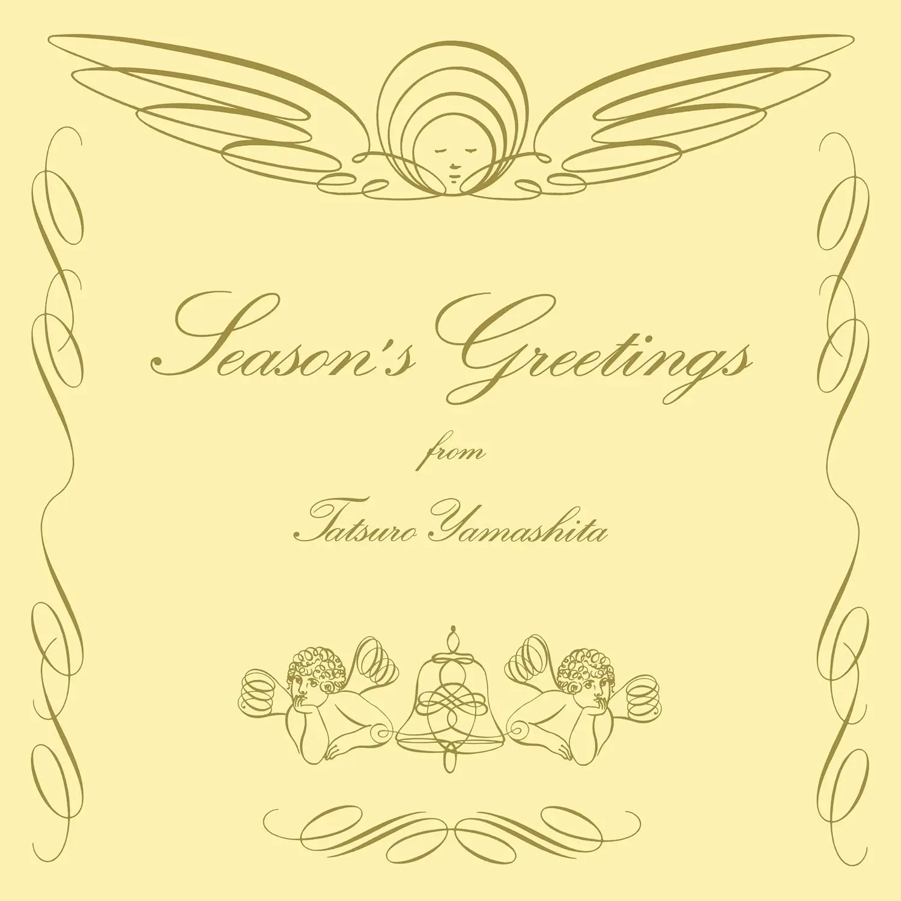

Album#16
Season's Greetings
{kind=link}

专辑信息
- 专辑名称：Season's Greetings
- 歌手：山下達郎 (Tatsuro Yamashita)
- 年份：1993-11-18
- 风格：日语、节日歌曲、City Pop、流行
- 时长：38:51
马上就是圣诞夜和圣诞节了，分享一张充满圣诞节日气息的专辑 ⸺ 山下达郎的《Season's Greetings》。
专辑中我最喜欢的是 Christmas Eve，曲子开头缓缓的吉他声像是缓缓飘落的雪，营造了一种隔离感，然后「🔔」的一声，仿佛整个城市都被点亮了，接着山下达郎那好听的嗓音唱到「Silent night, Holy night」，满满的节日气息。
雨は夜更け過ぎに1
雪へと変わるだろう
Silent night Holy night
きっと君は来ない
ひとりきりのクリスマス イブ
Silent night Holy night
心深く秘めた思い
叶えられそうもない
必ず今夜なら
言えそうな気がした
Silent night Holy night
まだ消え残る君への思い
夜へと降り続く
街角にはクリスマス ツリー
銀色のきらめき
Silent night Holy night
这首歌还被用在了 一个广告 上，描述了一个个恋人们重逢的故事，也很有节日感。
关于 Christmas Eve，推荐看看 蒸汽波被他养活 | 山下达郎 | 特级好听。
Christmas Eve 也有日文版的 ⸺ クリスマス・イブ。
Have Yourself A Merry Little Christmas 也是一首经典的圣诞歌曲，有很多人演唱过。上周去香港迪士尼，迪士尼里有一个巨大的圣诞树，会举行点灯仪式，当时他们唱的就是这首歌。如果你有留意页脚的话，你会发现一行若隐若现的字，正是「Have Yourself A Merry Little Christmas」，是我留的一个圣诞小彩蛋（不过专辑分享页面是一句我喜欢的歌词）。
专辑里的歌曲大多是关于圣诞的，如果你需要一些背景音乐，或许这张专辑能用来装点你的圣诞 :)
另外，也分享一些我喜欢的圣诞歌曲：
- 🎵 Merry Chritmas Mr. Lawrence - 坂本龍一
- 🎵 Wonderful Tonight - 方大同
- 🎵 White Christmas - Bing Crosby
- 🎵 Feliz Navidad - Walk off the Earth
- 🎵 Thank God It's Christmas - Queen
- 🎵 雪之歌 - 浪味仙贝
- 🎵 圣诞结 - 陈奕迅
- 🎵 圣诞节平安夜 - Pizzaface 披萨脸
- 🎵 Christmas Lights - Coldplay
- 🎵 Snowman - Sia
- 🎵 Merry Christmas - Ed Sheeran / Elton John
祝看到这里的你，圣诞夜快乐 & 圣诞快乐啦！
🎅🎄 Merry Christmas! 🎄🤶
｡:.ﾟヽ(*´∀`)ﾉﾟ.:｡
脚注:
雨过深夜后
就会变成雪花吧
Silent night Holy night
你应该不会来
我一人孤单的圣诞夜
Silent night Holy night
深藏在心中的感情
好像不太可能实现
如果一定是今晚
感觉我能说出口
Silent night Holy night
对你残存的感情
连同夜晚一同降来
装饰在街头的圣诞树
闪烁着银色的光芒
Silent night Holy night